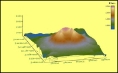
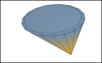
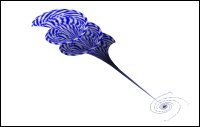
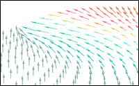

Version 0.3.0, 11 January 2006
QwtPlot3D is not a program, but a feature-rich
Qt
/
OpenGL
-based
C++ programming library
, providing essentially a bunch of 3D-widgets for programmers. The library is
zlib licensed
.
Features
Common code base for Qt3 and Qt4
Surface plots
Graph plots
(new)
Parametric Surfaces
Lighting
User defined visual objects
Scaling, rotating, shifting, zooming of data sets and mathematical functions ( see
Data Input Topics
)
Interactive mouse and keyboard handling
Resolution changing on the fly
Reading from MESH data files :See the 'data' directory and NativeReader documentation for this . You will find example datasets
here
Reading from FEM files
Flat (2D) labeling
Wireframe, filled polygons, hidden line
Floor projections (Isolines, Data)
Free configurable (labeling, numbering; linear, log or user-defined transformations) and autoscalable
axes
Free color model
Flat/Gouraud shading
Color legends
Pixmap output (all Qt supported formats)
Vector output (PostScript, EPS and PDF) via
gl2ps
// This feature is more thoroughly discussed
here
Todo
Next releases:
New widget classes (Volume Plots, Statistical Plots)
Transparency
...Proposals !